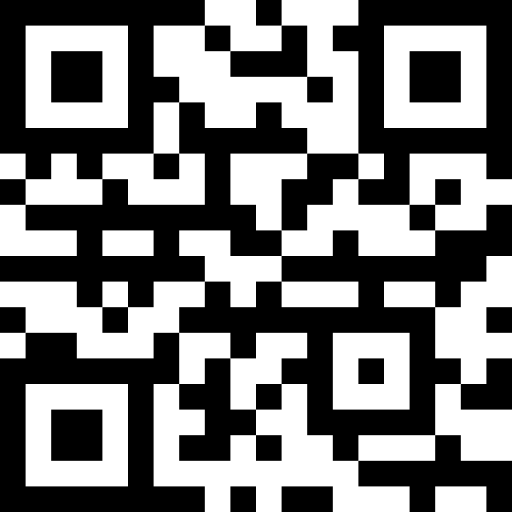

Locais para realizar as contribuições
O ponto principal do evento será no bolsão de veículos do Parque do Povo, localizado na avenida Quatorze de Setembro. Neste ponto o evento terá início às 8h00 e se estenderá até as 16h00, momento em que ocorrerá o sorteio dos brindes do evento, que serão 10 bicicletas.
No bairro Ana Jacinta o evento será no estacionamento da Unidade Básica de Saúde, localizada na avenida Osvaldo da Silva. Neste ponto o evento terá início às 9h00 e se estenderá até as 13h00, momento em que o material arrecadado será levado ao ponto principal do evento.
No bairro Parque Alvorada o evento será na Praça CEU, localizada no cruzamento das avenidas Juscelino Kubitschek e Tancredo Neves. Neste ponto o evento terá início às 9h00 e se estenderá até as 13h00, momento em que o material arrecadado será levado ao ponto principal do evento.
No bairro João Domingos Netto o evento será na Praça do Wi-Fi, localizada avenida Maria Menezes Alcântara. Neste ponto o evento terá início às 9h00 e se estenderá até as 13h00, momento em que o material arrecadado será levado ao ponto principal do evento.
Gostaria de contribuir de algum outro modo?
Abaixo estão nossos dados para fazer doações via pix para contribuir com o nosso projeto :)
Chave pix CNPJ: 00.000.000/0001-00
E-mail: reciclagemeletronicaprudente@gmail.com
QR code:
